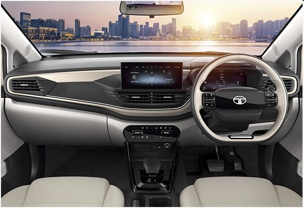
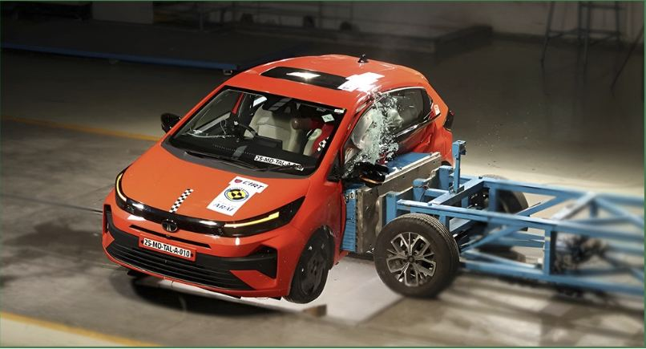
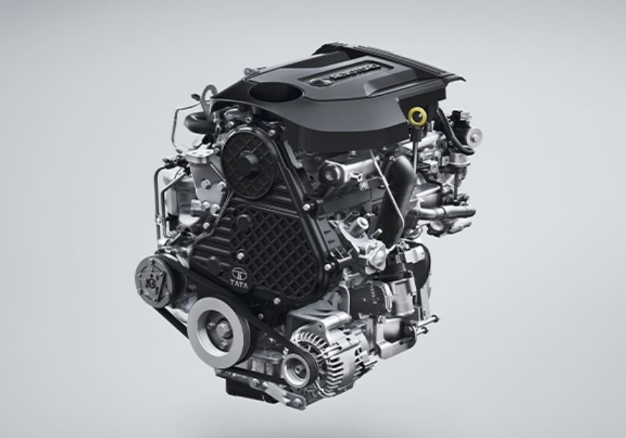
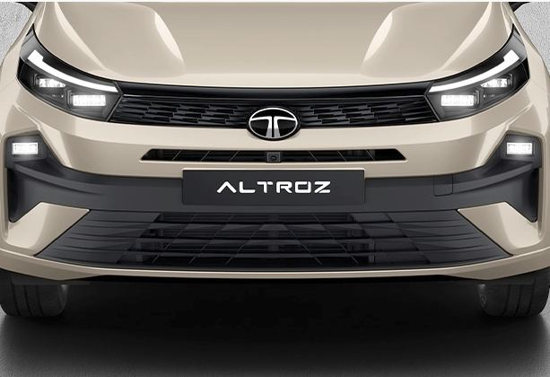

Skoda Slavia Facelift Review: Price, Specs & Features (2026)
By Gagan Mishra

The Tata Altroz has spent years quietly building a reputation for one thing above all else: safety. In a segment where most hatchbacks compete on styling and infotainment, the Altroz leads with a 5-star Bharat NCAP rating, a diesel engine nobody else in the class offers, and — as of a May 2026 update — the only factory-fitted CNG kit in the segment paired with an automatic gearbox. None of that makes it the most exciting hatchback to drive. Whether that trade-off works for you depends entirely on what you're actually shopping for.
This review is based on Tata Motors' official specifications, published road-test reporting, and owner discussions, rather than our own long-term test. Where a claim comes from published road-test observations rather than our own driving, we say so directly. See our Review Methodology for how we approach this.
The Altroz doesn't win on outright driving thrills — several road tests describe the petrol engine as adequate rather than exciting. It wins by being the only hatchback in its class that lets you choose between petrol, diesel, and CNG, backing every one of those choices with segment-leading safety and a genuinely large 345-litre boot. If safety and practicality top your list, it's hard to look past.
| Powertrain | Transmission | Approx. Ex-Showroom Price |
|---|---|---|
| 1.2L Petrol | 5-speed Manual / 5-speed AMT / 6-speed DCT | ₹6.30 – 10.51 Lakh |
| 1.5L Diesel | 5-speed Manual | From ~₹8.20 Lakh |
| CNG (dual-cylinder) | 5-speed Manual / 5-speed AMT | ₹7.30 – 10.80 Lakh |
The Altroz is sold across five broad trims — Smart, Pure, Creative, Accomplished S, and Accomplished Plus S — each available in some combination of the three powertrains above. Treat the table as a starting point: introductory offers, city-specific RTO charges, and periodic price revisions shift the final number.
The Creative trim is where the Altroz starts feeling properly equipped — you get the bigger touchscreen and digital cluster without paying for the top-end extras. If safety is your main driver, any trim gets you the same 5-star structure and six airbags, so there's no need to stretch to the top variant purely for protection.
The current-generation facelift sharpened what was already one of the better-looking hatchbacks in the segment. Twin-pod LED headlights, sleeker DRLs, and a revised front bumper with functional air dams give the nose a more purposeful look. Flush door handles and new 16-inch alloys carry the theme down the side, while connected LED tail-lights are the standout change at the rear. It's an evolution, not a reinvention — the silhouette that's made the Altroz recognisable since launch carries over unchanged.

The cabin's headline feature is a 10.25-inch touchscreen paired with a matching 10.25-inch digital instrument cluster — both class-competitive rather than class-leading, but a genuine step up from the smaller unit on earlier versions. Tata's 90-degree door opening makes getting in and out easier than most rivals, a small but genuinely useful detail for anyone regularly loading kids or shopping. At 3,990mm long with a 2,501mm wheelbase, the Altroz doesn't have a class-leading cabin, but the 345-litre boot on petrol and diesel versions is among the largest in the segment — the CNG version loses some of that to the underfloor tank.

This is where the Altroz makes its case. It carries a 5-star Bharat NCAP rating and a 5-star Global NCAP rating for adult occupant protection, with six airbags standard across the entire range rather than gated to top trims — genuinely uncommon in this price band. Higher variants add a 360-degree camera, a voice-assisted electric sunroof, wireless phone charging, ambient lighting, and connected-car tech through Tata's iRA platform.
| Safety Metric | Score |
|---|---|
| Bharat NCAP Overall Rating | 5 Stars |
| Adult Occupant Protection | 26.65 / 32 |
| Child Occupant Protection | 44.90 / 49 |

The 1.2-litre Revotron petrol makes around 87 bhp and 115 Nm — enough for daily driving, but several published road tests describe it as unexciting rather than punchy, especially against turbocharged rivals. The 1.5-litre diesel, at roughly 89-90 bhp and 200 Nm, is the more interesting choice on paper: it remains the only diesel engine in this class, and its low-end torque suits highway driving well. The CNG version trades power for running cost, and since May 2026 it's the only one in the segment available with an automatic — a 5-speed AMT — rather than manual-only.
| Powertrain | Claimed Efficiency |
|---|---|
| 1.2 Petrol (Manual) | ~19.33 km/l |
| 1.5 Diesel | ~23.60–25.10 km/l |
| CNG | Up to ~26.90 km/kg |
As with any claimed figure, real-world numbers depend heavily on traffic, AC use, and driving style — treat the table as a ceiling rather than a promise, particularly for the petrol in heavy city traffic.

This section draws on published specifications and owner-reported running costs rather than our own extended ownership experience, in line with our Review Methodology. The three-powertrain spread is really the Altroz's biggest ownership advantage: high-mileage city drivers can lean on the CNG version's running costs, long-distance drivers get a genuine diesel option most rivals don't offer at all, and petrol buyers get the lowest upfront price. Reported real-world city mileage on the petrol tends to land noticeably below the claimed 19.33 km/l figure, which is normal for this class of naturally aspirated engine, so budget accordingly rather than planning around the ARAI number.
Following our Review Methodology, we rate every review across eight criteria, then average them into the final Octane Score.
| Criteria | Score |
|---|---|
| Design | 8.0 / 10 |
| Performance | 6.5 / 10 |
| Mileage Potential | 8.5 / 10 |
| Comfort | 7.5 / 10 |
| Features | 8.0 / 10 |
| Safety | 9.0 / 10 |
| Practicality | 8.0 / 10 |
| Value for Money | 8.0 / 10 |
| Octane Score (average) | 7.9 / 10 |
The Altroz isn't chasing anyone with turbocharged excitement or a flashier cabin — it's chasing the buyer who wants the safest, most flexible hatchback they can find at this price. On that specific brief, it largely delivers: a 5-star rating structure across the range, the only diesel in the segment, and now the only CNG-automatic combination too. The trade-off is a petrol engine that reviewers consistently describe as competent rather than engaging. If that's a dealbreaker, the Baleno or i20 may suit you better. If safety and fuel flexibility matter more than outright driving thrills, the Altroz is one of the strongest cases in its class.
What is the price of the Tata Altroz?
The Tata Altroz ranges from approximately ₹6.30 lakh to around ₹10.80 lakh ex-showroom, depending on powertrain and variant. Exact top-end pricing varies slightly by source and city.
Does the Altroz come with a diesel engine?
Yes. The Altroz is currently the only mass-market hatchback in India offered with a diesel engine, a 1.5-litre unit producing around 89-90 bhp and 200 Nm.
Is the Tata Altroz safe?
Yes. The Altroz has a 5-star Bharat NCAP rating and a 5-star Global NCAP rating for adult occupant protection, with six airbags standard across the range.
What mileage does the Altroz give?
The petrol returns approximately 19.3 km/l, the diesel around 23.6-25.1 km/l, and the CNG version up to roughly 26.90 km/kg, the highest figure in the lineup.
Does the Altroz CNG have an automatic option?
Yes. Since May 2026, Tata added a 5-speed AMT to select CNG variants, making the Altroz the only B2-segment hatchback in India with a factory-fitted CNG kit paired with an automatic gearbox.
How much boot space does the Altroz have?
345 litres on the petrol and diesel versions, among the largest in the premium hatchback class. The CNG version has less usable space due to the underfloor tank.
Is the Altroz worth buying over the Baleno or i20?
It depends on your priorities. The Altroz leads on safety ratings and is the only one in the group offered with a diesel or CNG option. The Baleno and i20 tend to feel more refined and have stronger dealer networks in some regions, so it's worth cross-shopping all three before deciding.
By Gagan Mishra

By Gagan Mishra